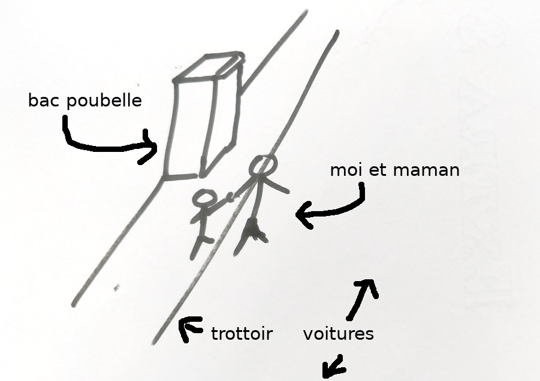

:title:
Transport Nantes
:css_text:
:javascript_inline:
:body:
J'aime bien aller à l'école avec maman
Je m'inquiète pour maman...

Les trottoirs sont souvent trop étroit pour qu'un adulte puissent
se promener avec son enfant. Encore plus quand encombré. La rue
devient alors un espace partagé entre piéton et voiture.